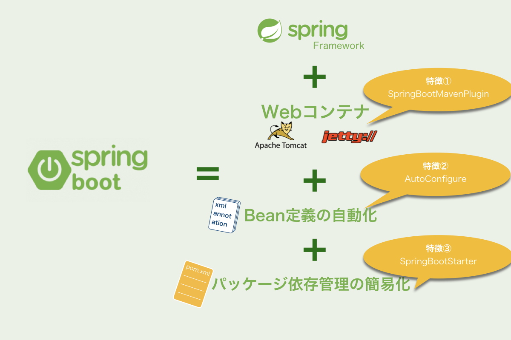
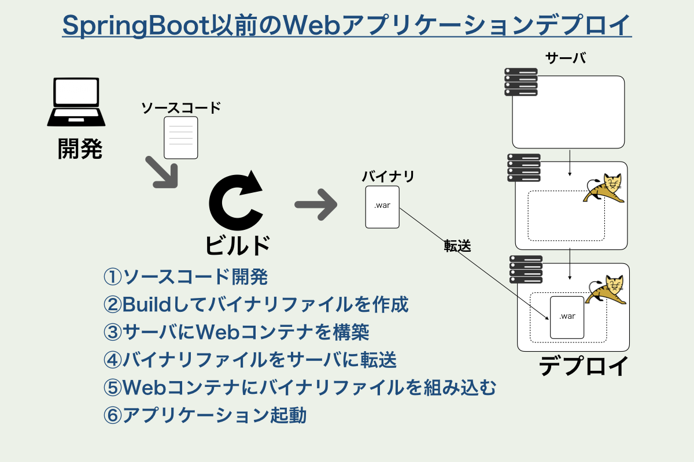
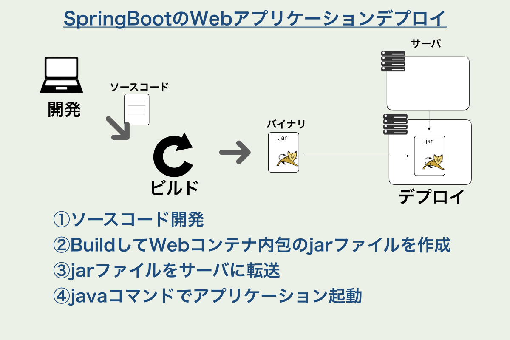
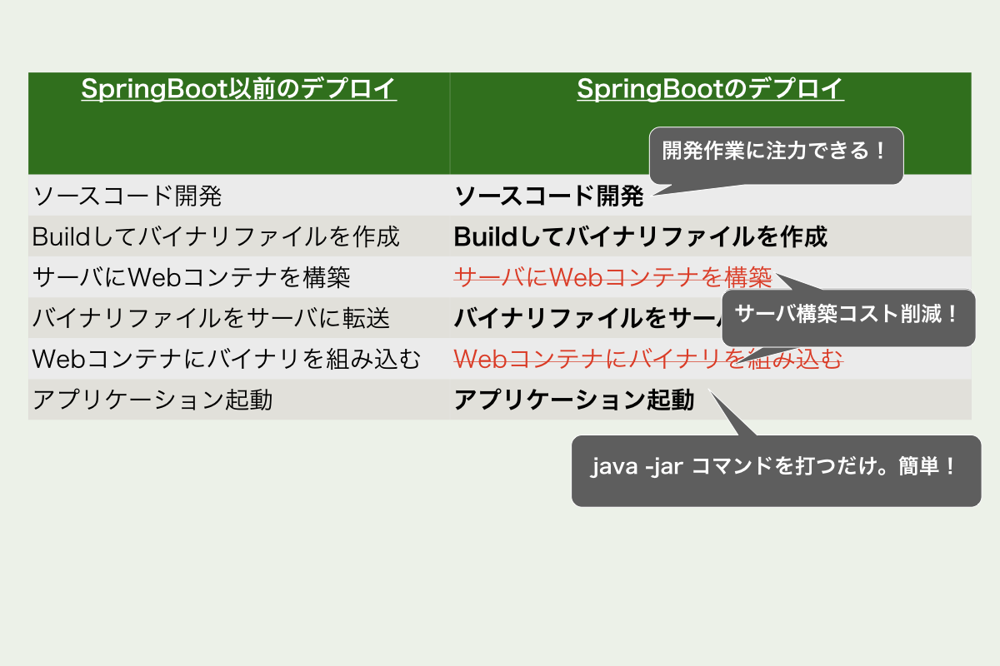
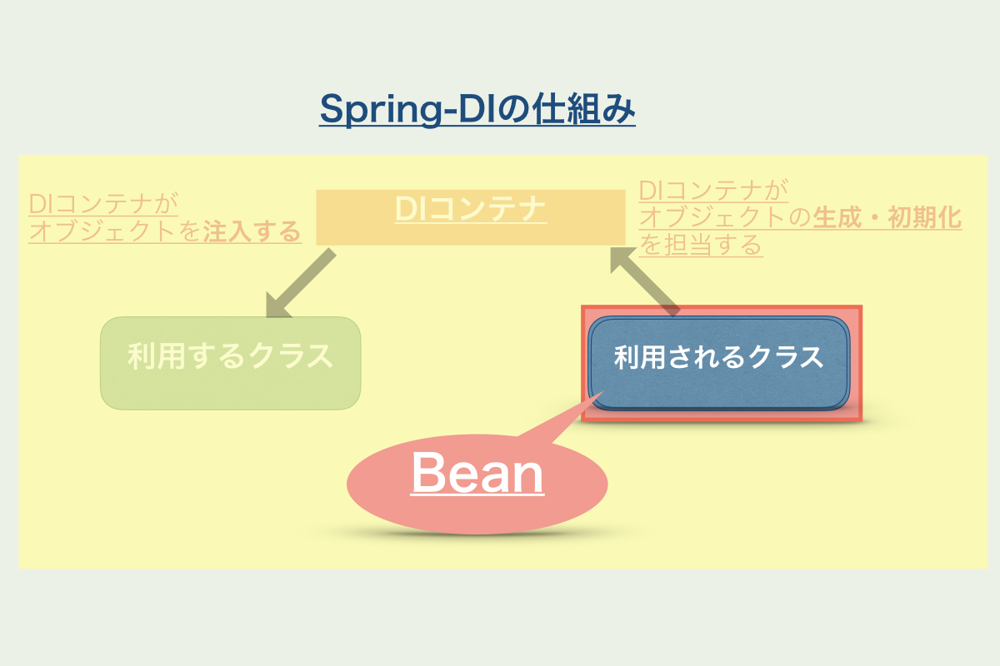
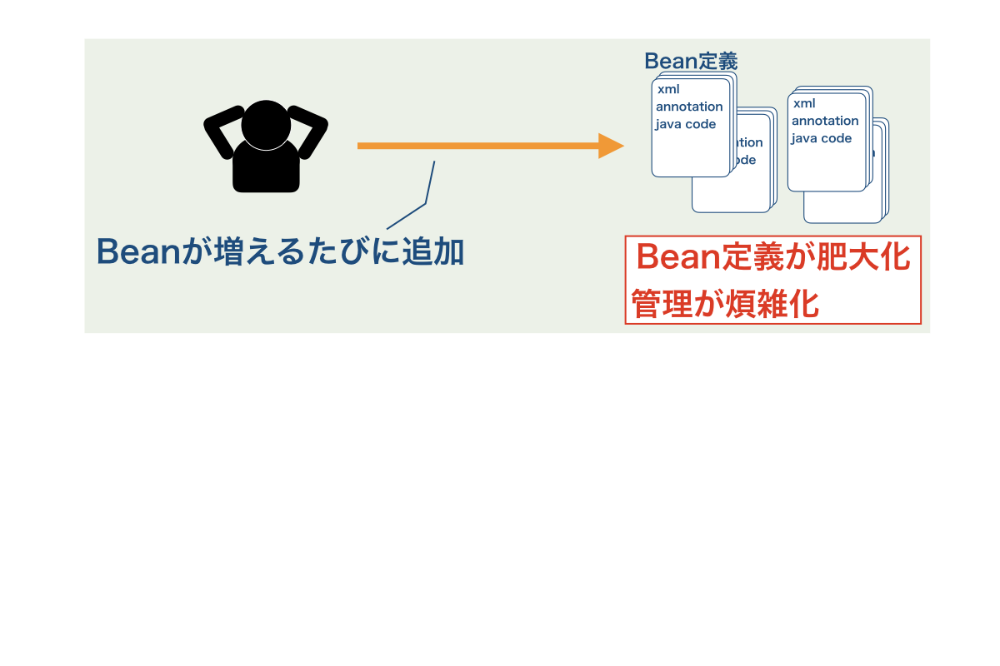
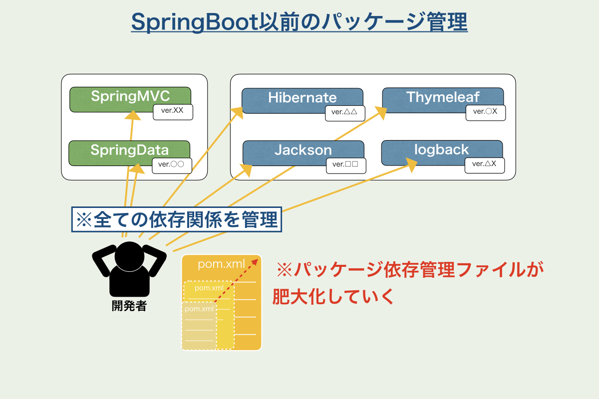
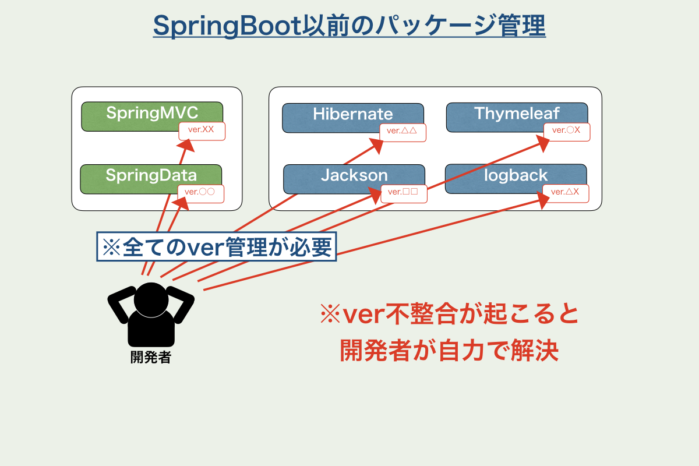
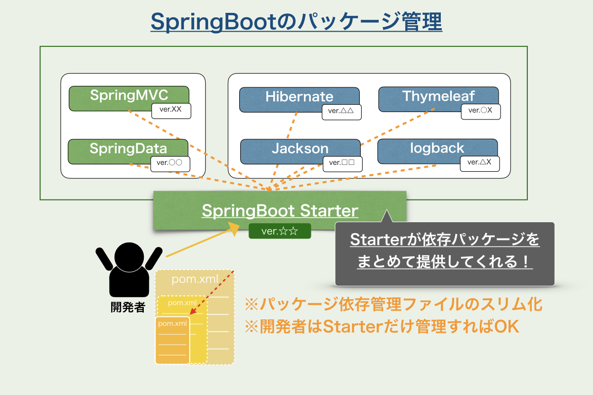

SpringBootの特徴
 SpringBootとは(おさらい)
SpringBootとは(おさらい)
- SpringFrameworkをより簡単に・効率的に扱う為の仕組み
- ソースコードではなく、アプリケーションレベルの管理・運用のためのフレームワーク

特徴① Webコンテナの組み込みビルド
~Spring Boot Maven Plugin~



特徴② Bean定義の自動化
~AutoConfigure~
と言われても・・・
Beanって何？
Bean定義って何？
Beanとは
- Spring(DIコンテナ)に管理させるクラスのこと

SpringBoot以前は・・・
SpringBootでは・・・
- 主だったライブラリのBean定義を自動的に読み込んでくれる
- 開発者はBean定義を用意する事なく、各ライブラリをBeanとして利用することができる
- しかも初期化処理・デフォルト設定も自動でしてくれる
- もちろんカスタマイズも可能
特徴③ パッケージ依存管理の簡易化
~SpinrgBootStarter~
[おさらい]SpringFrameworkは・・・
- 様々なレイヤ・役割のライブラリ・フレームワークを組み合わせて利用するもの
- フルスタックなフレームワークではない
- 「SpringFramework」という単体のフレームワークは存在しない
この問題を解決するのが
- SpringBootStarter



Starterの実体はpomファイル